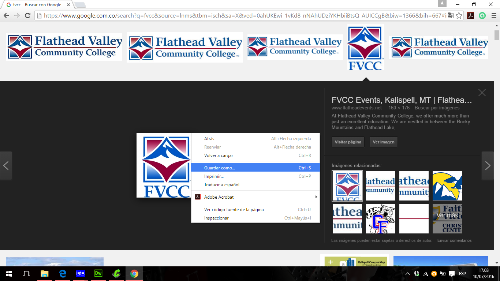
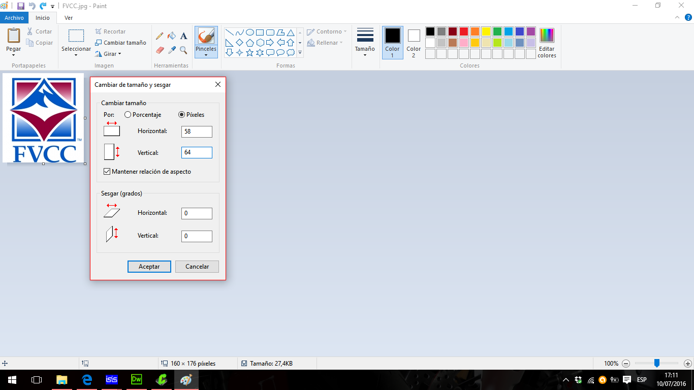
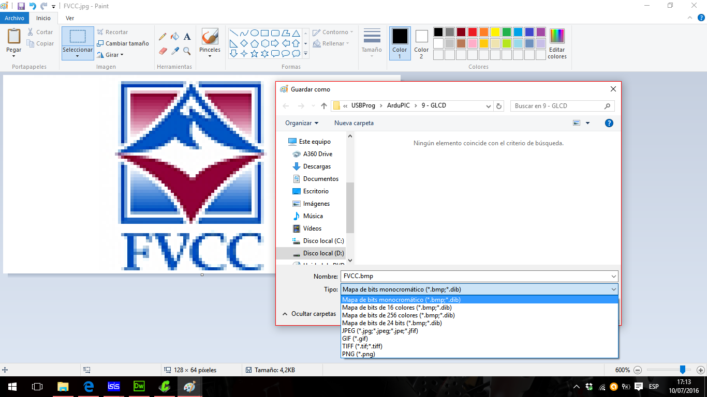
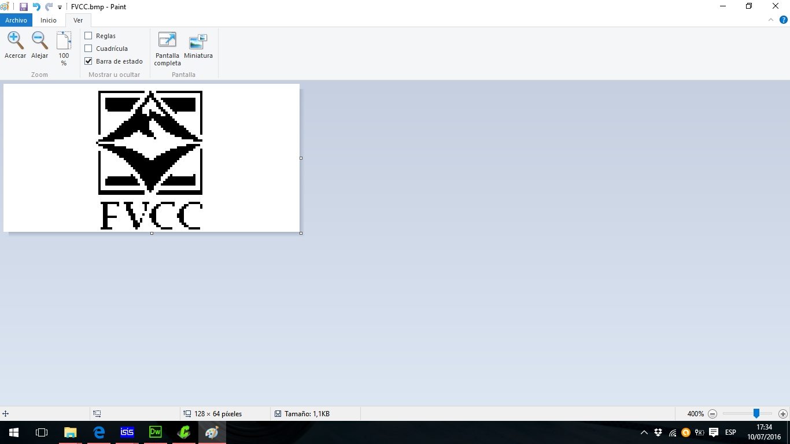
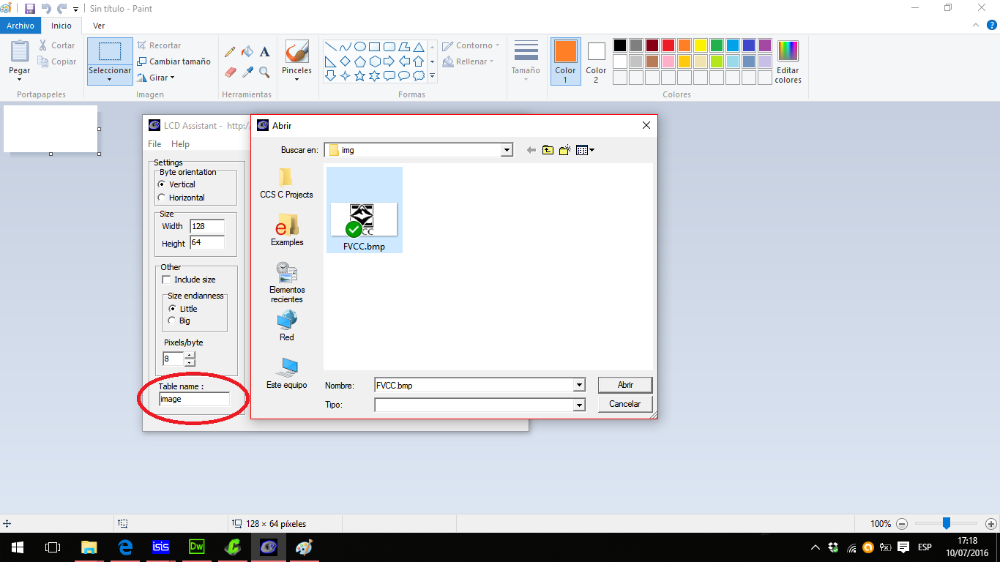
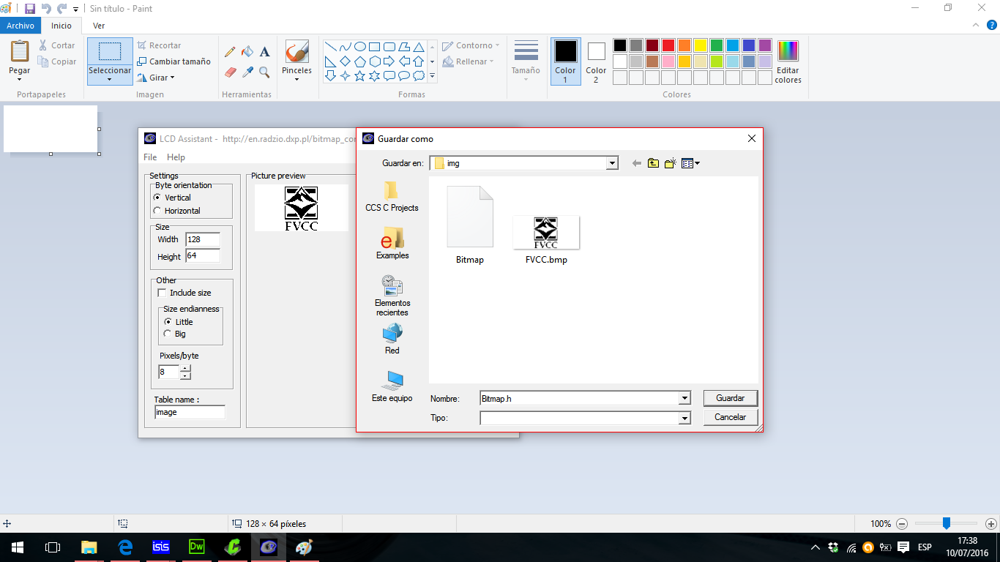
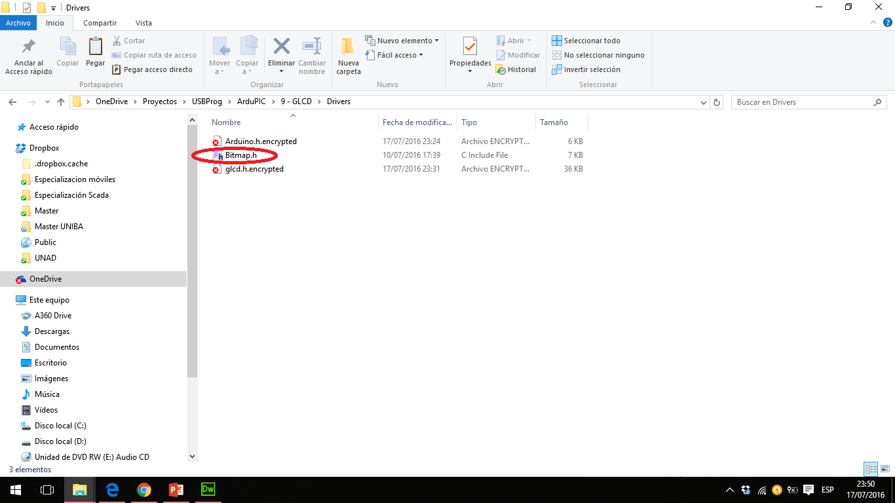

1 - Search and Download the desired image.

2 - Resize the image (GLCD size is 128 x 64 pixels).

3 - Save image as monochromatic bitmap.


4 - Run LCDAssistant.exe and Load the image from the File menu. (Don't forget to rename the Table as "image")

5 - Save the output from the File menu (Don't forget to rename the output file as "Bitmap.h")

6 - Copy the file "Bitmap.h" to the Drivers directory of the project
